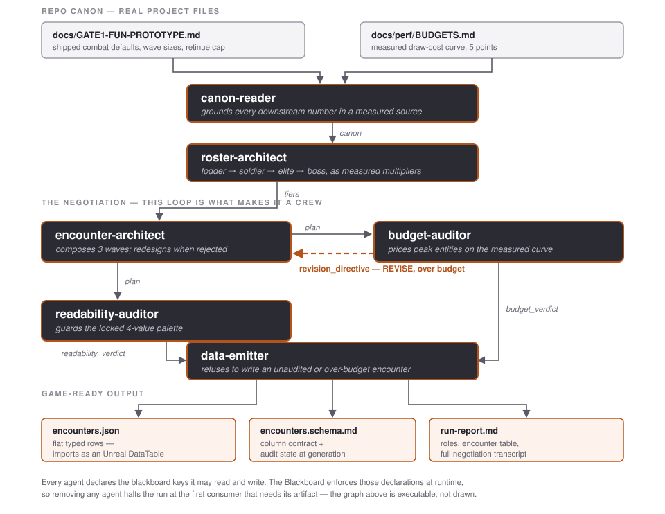

Multi-Agent AI for Game Development · Assignment #03
Six agents that design a floor of Kindled against its own measured frame budget
Kindled is a single-player top-down roguelike in Unreal Engine 5.8. You carry the only fire in a pitch-dark world, and an army gathers in your light because outside it they die. You command that army — three to ten units early, hundreds by late run — through four broad stances rather than unit selection. It is the capstone game for this course; the design document is Assignment #2's final GDD, and the playable prototype lives in the same repository as this crew.
The game's defining constraint is entity count against frame budget. Every enemy on
screen costs draw time, and this project has measured that cost
(docs/perf/BUDGETS.md). So encounter design in Kindled is not a taste question — it is a
budget question with a hard ceiling at 16.6 ms per frame.
This crew turns the project's measured canon into a DataTable-ready encounter specification: the wave composition for one floor of the vertical slice, priced against the real frame budget and checked against the locked four-value palette. One run writes three files:
| Artifact | What it is |
|---|---|
out/encounters.json | Flat, typed rows that import directly as an Unreal DataTable — the game data the encounter actually ships as |
out/encounters.schema.md | The column contract for that JSON, plus both audit verdicts at generation time |
out/run-report.md | Every agent's declared role, the encounter table, the budget verdict, and the full negotiation transcript |
This is game-ready output rather than a document about game-ready output:
encounters.json has a unique Name row key, scalar columns only and no nesting —
exactly what Unreal's DataTable importer requires, and the same contract the project's existing data
files follow.
No dependencies: Python 3.8+ standard library, no network calls, no API key, nothing to install. That is deliberate. The rubric grades whether the crew runs, and a crew that needs a live API key is a crew that can fail at grading time for reasons that have nothing to do with its design. The assignment permits "CrewAI or raw orchestration code" — this is the latter, taken seriously: enforced I/O contracts, a shared blackboard, and a real negotiation loop.

flowchart TD
subgraph SOURCES[Repo canon - real project files]
G1["docs/GATE1-FUN-PROTOTYPE.md<br/>shipped combat defaults, wave sizes"]
BU["docs/perf/BUDGETS.md<br/>measured draw-cost curve"]
end
A1["canon-reader<br/><i>grounds the run</i>"]
A2["roster-architect<br/><i>derives the tier ladder</i>"]
A3["encounter-architect<br/><i>composes the waves</i>"]
A4["budget-auditor<br/><i>prices it, can reject</i>"]
A5["readability-auditor<br/><i>guards the 4-value palette</i>"]
A6["data-emitter<br/><i>writes game data</i>"]
OUT1["out/encounters.json<br/>UE DataTable rows"]
OUT2["out/encounters.schema.md"]
OUT3["out/run-report.md"]
G1 --> A1
BU --> A1
A1 -->|canon| A2
A1 -->|canon| A3
A1 -->|canon| A4
A1 -->|canon| A5
A1 -->|canon| A6
A2 -->|tiers| A3
A2 -->|tiers| A6
A3 -->|plan| A4
A4 -.->|"revision_directive: REVISE, over budget"| A3
A4 -->|budget_verdict| A6
A3 -->|plan| A5
A5 -->|readability_verdict| A6
A6 --> OUT1
A6 --> OUT2
A6 --> OUT3
classDef agent fill:#2b2b33,stroke:#b4531a,stroke-width:2px,color:#ffffff
classDef src fill:#f6f6f7,stroke:#9a9aa4,color:#222222
classDef out fill:#fdf3ec,stroke:#b4531a,color:#222222
class A1,A2,A3,A4,A5,A6 agent
class G1,BU src
class OUT1,OUT2,OUT3 out
Each agent declares the blackboard keys it may read and write. The Blackboard class
enforces those declarations at runtime — an agent that touches an undeclared key raises
ContractViolation. That is why the graph in §2 is executable rather than drawn.
| Agent | Input | Output | What it does |
|---|---|---|---|
| canon-reader | repo markdown | canon |
Parses GATE1-FUN-PROTOTYPE.md and BUDGETS.md for the shipped wave sizes, the retinue baseline and the measured draw-cost curve. Nothing downstream is permitted to invent a number. |
| roster-architect | canon | tiers |
Derives the fodder → soldier → elite → boss ladder as multipliers over the measured baseline, and prices each tier in encounter-budget points. |
| encounter-architect | canon, tiers, revision_directive | plan |
Composes the three waves — how many of which tier, spawn mode, breather length — and redesigns when an auditor rejects. |
| budget-auditor | canon, plan | budget_verdict, revision_directive |
Projects peak concurrent entities onto the measured cost curve by interpolation. Returns PASS, or REVISE with a directive naming exactly how many bodies are affordable. |
| readability-auditor | canon, plan | readability_verdict |
Checks each wave's distinct enemy types against the free palette values, so the player can still parse the fight. Flags waves that must be carried by silhouette rather than value. |
| data-emitter | canon, tiers, plan, both verdicts | the three files | Flattens the approved plan into DataTable rows, writes the schema and the run report, and refuses to emit an unaudited or over-budget encounter. |
The rubric asks whether any agent could be dropped without breaking the pipeline. This crew answers
with a flag rather than a promise — --drop <agent> runs the crew without one and lets
the contract system stop it:
$ py crew/kindled_crew.py --drop budget-auditor !! RUNNING WITHOUT 'budget-auditor' - demonstrating that the pipeline depends on it [canon-reader] - read 2 canon source(s): docs/GATE1-FUN-PROTOTYPE.md, docs/perf/BUDGETS.md [roster-architect] - derived 4 tiers over baseline 130HP/30DPS --- negotiation round 1 --- [encounter-architect] - composed W1: 250 bodies | W2: 450 bodies | W3: 701 bodies [readability-auditor] - CROWDED - max 4 distinct enemy types against 2 free palette values [data-emitter] PIPELINE BROKEN - data-emitter needs 'budget_verdict', but no agent has produced it. An upstream agent is missing from the crew - the pipeline cannot proceed. exit code 1
Every agent fails this way, at a different point, for a different missing artifact. Drop
roster-architect and encounter-architect halts on a missing
tiers; drop canon-reader and nothing starts at all.
$ py crew/kindled_crew.py
==========================================================================
KINDLED - ENCOUNTER DESIGN CREW
raw orchestration | stdlib only | 6 agents | floor 1
==========================================================================
[canon-reader]
- read 2 canon source(s): docs/GATE1-FUN-PROTOTYPE.md, docs/perf/BUDGETS.md
- waves=[250, 450, 700] retinue_cap=120 perf curve has 5 measured points
[roster-architect]
- derived 4 tiers over baseline 130HP/30DPS: fodder(58HP), soldier(130HP),
elite(416HP), boss(2340HP)
--- negotiation round 1 ---
[encounter-architect]
- composed W1: 250 bodies (250pts) | W2: 450 bodies (674pts) | W3: 701 bodies (1698pts)
[budget-auditor]
- PASS - peak 821 entities ~ 11.12ms (5.48ms headroom)
[readability-auditor]
- CROWDED - max 4 distinct enemy types in a wave against 2 free palette values
[data-emitter]
- wrote 7 DataTable rows -> crew/out/encounters.json
- wrote column contract -> crew/out/encounters.schema.md
==========================================================================
DONE - 7 encounter rows, 1 negotiation round(s)
==========================================================================

Tier row in
encounters.json — but adding one is not free in either currency the crew tracks. It
costs frame budget, which budget-auditor prices, and it costs a distinct
silhouette, which readability-auditor guards: at these three values the Archer has to
be told apart from the Knight by shape alone — hood and bow against shield and spear.
roster-architect treat a tier as
a cheap thing to add and budget-auditor as the expensive thing to check: art is no longer
the bottleneck on trying an encounter idea — frame budget is. Knight frames are shown raw, as generated,
before the palette pass; the Archer is post-quantise.
roster-architect's fodder and elite tiers are cast from,
and it is precisely why readability-auditor is a separate agent with a veto rather than a
line in someone else's job: having eleven good options is not the same as being able to ship four of
them at once. At four palette values, two of which are already spent on the lit floor and the
retinue, most of this slate cancels itself out on screen. Choosing which survive is a design decision
the crew makes explicit instead of leaving to whoever draws last.{
"_meta": {
"game": "Kindled", "floor": 1, "generated": "2026-07-27",
"canon_sources": ["docs/GATE1-FUN-PROTOTYPE.md", "docs/perf/BUDGETS.md"],
"grounded_in_repo_docs": true,
"budget_verdict": { "peak_concurrent_entities": 821, "projected_frame_ms": 11.12,
"frame_budget_ms": 16.6, "headroom_ms": 5.48, "status": "PASS" }
},
"rows": [
{ "Name": "W1_fodder", "Wave": 1, "Tier": "fodder", "Count": 250, "HP": 58,
"DPS": 18, "BudgetCost": 1, "SpawnMode": "ring", "BreatherAfterSeconds": 6 },
{ "Name": "W3_elite", "Wave": 3, "Tier": "elite", "Count": 42, "HP": 416,
"DPS": 54, "BudgetCost": 12, "SpawnMode": "arena_entrances", "BreatherAfterSeconds": 0 },
{ "Name": "W3_boss", "Wave": 3, "Tier": "boss", "Count": 1, "HP": 2340,
"DPS": 78, "BudgetCost": 60, "SpawnMode": "arena_entrances", "BreatherAfterSeconds": 0 }
]
}
The crew is not a demonstration that prints a pre-written answer. It does arithmetic against measured data and reaches conclusions the author did not hand it.
Floor 1 passes comfortably. The shipped Gate-1 wave structure — 250 / 450 / 700 brood plus a 120-unit retinue cap — peaks at 821 concurrent entities ≈ 11.12 ms, leaving 5.48 ms of headroom.
Floor 3 does not. At the escalated density the vertical slice calls for, it peaks at 1,871 entities ≈ 37.29 ms — 2.3× over budget. The budget-auditor rejects it, tells the architect only 956 bodies are affordable, and the two converge over three rounds:
$ py crew/kindled_crew.py --floor 3
--- negotiation round 1 ---
[encounter-architect] composed W3: 1751 bodies (4155pts)
[budget-auditor] REVISE - peak 1871 entities ~ 37.29ms, over budget by 20.69ms;
only 956 bodies are affordable, sending back
--- negotiation round 2 ---
[encounter-architect] revising; re-scaling to x1.36 of the shipped wave sizes
[budget-auditor] REVISE - peak 1077 entities ~ 16.62ms, over budget by 0.02ms
--- negotiation round 3 ---
[encounter-architect] composed W3: 956 bodies (2292pts)
[budget-auditor] PASS - peak 1076 entities ~ 16.60ms (0.00ms headroom)
DONE - 7 encounter rows, 3 negotiation round(s)
The escalating-density promise in the vertical slice cannot be paid for by the current renderer. Floor 3 has to be cut to roughly 55% of its intended body count to hold 60 fps, and even then it lands with zero headroom. This agrees with the project's independent conclusion that the debug-box renderer cannot hold the entity gate — but it was reached from the other direction, by asking what the encounter can afford rather than what the renderer costs.
Separately, the readability-auditor reports CROWDED on the boss wave: four distinct enemy types against two free palette values, once the lit floor and the retinue have taken theirs. Its verdict is written into the emitted schema, so art direction inherits a stated constraint rather than a surprise.
BUDGETS.md changes and every number the crew produces changes
with it — which is exactly why canon-reader parses that file instead of hardcoding it.roster-architect encodes a
designer's ladder; only the baseline it scales is measured.